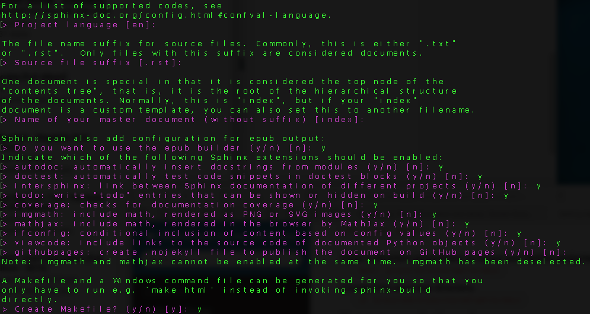
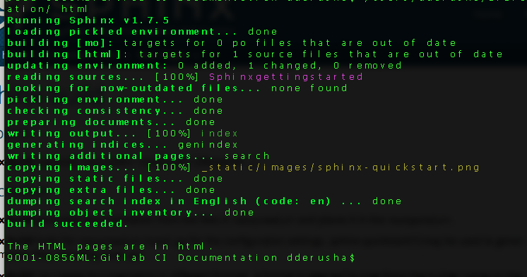

Getting started with Sphinx¶
While attending and presenting at Mac Admin and Developer conference, MacAD.uk there was a session Your code should document itself! Embedding documentation into your Python projects that interested me. Awesome content presented by Bryson, I knew someday this would be useful. Working on a project, people were asking for documentation explaing our processes. Like any good project, we didn’t have any centralized methodical represenation of our thoughts, why not use Sphinx?
Sphinx¶
Sphinx is a tool that makes it easy to create intelligent and beautiful documentation, written by Georg Brandl and licensed under the BSD license.
Install Sphinx¶
pip install sphinx
- Make a directory somewhere to house your Sphinx projects.
mkdir /place/to/store/sphinx/docs- Change into your new directory.
cd /place/where/you/stored/sphinx/docs- Next start your project by running
sphinx-quickstart
Setting up your Sphinx project¶
After runnin sphinx-quickstart you should see the following output.

the default setting is in [] , press return for the default setting.
- Follow along with the promts that get outputted after your selections.
- Name the project
- Add the author and give the project a version number.
After completing all the prompts, I suggest creating the Makefile.
Congrats!! your first sphinx project is now started!
Working with your new Sphinx project¶
Navagate to the directory you setup for your documentation, and you should see something similar:

I use atom to edit the conf.py and index.rst files. There are plenty of editors you
can choose from such as Sublime or BBedit.
- Open terminal and
cdto the project directory.- Next let’s create some
.rstfiles to get our documentation started.- While in the current project directory,
touch mysphinxdirections.rstto create a Restructured Text file.
I’d create a couple of files to get started. For example, some docs used to create this project are called
- sphinxgettingstarted.rst
- GitLabsetup.rst
- runnersetup.rst
Avoid spaces, and try to keep the filename relevant to it’s function.
Open your editor and open your project. Open your .rst files and give them a title heading.
{kind=link}
Make sure to save the files after adding the heading.
Next open your index.rst, and add the .rst files you touched in the terminal.
Note
Don’t add the file extension .rst to the index list.

At this point, we have
- Installed Sphinx.
- created a Sphinx project.
- created .rst files for our project.
- added .rst filenames to the index.rst
Now that we have some content configured, let’s build some documentation!
Building your Sphinx project¶
With the base of our project configured, we can generate some html content to view what we’ve started. Head back to your terminal application for the next step.
sphinx-build [options] <source directory> <output directory> [filenames]
If no output directory is listed, the output defaults to the source.
sphinx-build /path/to/my/sphinx/project/ html
will result in the following output.
Head back to the finder and locate your source directory and locate the new HTML directory.

Double click on the index.html file, and a web browser will display your project.

shpinx-build man page and additional options
Doesn’t that look purdy? I’m not a designer, and with minimal effort I have a resource that looks nice! Yes, yes that does look nice, why doesn’t my project look like that?
Sphinx Themes¶
A theme is a collection of HTML templates, stylesheets and other files. A theme keeps the HTML appearance consistant throughout the project making it look good.
In our example project, we are using sphinx_rtd_theme.
Setting up a Theme¶
Open your text editor and navigate back to the source directory. Locate the conf.py and open it for modification.
Sphinx has some built in themes you can use setting the html_theme config value in your conf.py.
Search
conf.pyforhtml_theme, enter the valuesphinx_rtd_themeand save the script.
Open terminal and install the theme
pip install sphinx_rtd_theme
Save all your work.
Re-build your project, and refresh your browser and now you should see the blue and black theme.